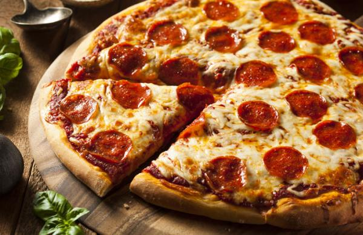

<ion-header>

  <ion-toolbar color="primary">
    <ion-buttons slot="start">
      <ion-menu-button></ion-menu-button>
    </ion-buttons>
    <ion-title class="titles-toolbar">Pedidos</ion-title>
    <ion-buttons slot="end">
      <ion-button (click)="sair()">
        <ion-icon name="md-log-out" class="padrao-icon"></ion-icon>
      </ion-button>
    </ion-buttons>
  </ion-toolbar>

</ion-header>

<ion-content>

  <ion-grid>
    <ion-row>
      <ion-col size="9.7" class="searchbar-input-espacamento">
        <ion-input class="searchbar-input" placeholder="Pesquisar..." clearInput></ion-input>
      </ion-col>
      <ion-col>
        <ion-button color="secondary">
          <ion-icon class="padrao-icon" name="md-search"></ion-icon>
        </ion-button>
      </ion-col>
    </ion-row>
    <ion-row>
      <ion-col>
        <ion-list class="padrao-list" lines="full">
          <ion-item>
            <ion-thumbnail slot="start">
              
            </ion-thumbnail>
            <div>
              <ion-label><b>Mesa:</b> 2</ion-label>
              <ion-label><b>Sabor:</b> Calabresa</ion-label>
              <ion-label><b>Cliente:</b> Guilherme</ion-label>
            </div>
            <ion-checkbox slot="end"></ion-checkbox>
          </ion-item>
          <ion-item>
            <ion-thumbnail slot="start">
              
            </ion-thumbnail>
            <div>
              <ion-label><b>Mesa:</b> 2</ion-label>
              <ion-label><b>CHAMADA DE GARÇOM</b></ion-label>
              <ion-label><b>Cliente:</b> Guilherme</ion-label>
            </div>
            <ion-checkbox slot="end"></ion-checkbox>
          </ion-item>
        </ion-list>
      </ion-col>
    </ion-row>
  </ion-grid>

</ion-content>

<ion-footer>

  <ion-toolbar position="bottom">
    <div class="formatacao-padrao-button-texto">
      <ion-button color="secondary" class="button-padrao-tamanho" (click)="acaoToast()">
        <ion-icon name="md-checkmark-circle" class="espacamento-icon-button"></ion-icon> FINALIZAR ATENDIMENTO
      </ion-button>
    </div>
  </ion-toolbar>

</ion-footer>